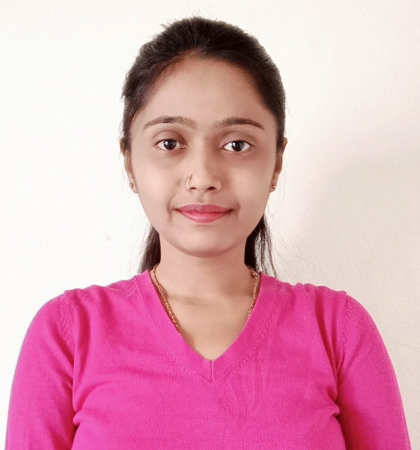

I am Asif Mulla!
Hello there!
I hope you all are doing well! For the past 20 months, I've been immersed in the world of programming at TCS (TATA Consultancy Services) in Pune's vibrant Hinjewadi area, but beyond my professional role I'm driven by an insatiable passion for Artificial Intelligence (A.I.).
This fervor has led me to create this webpage dedicated to demystifying A.I.'s impact on our everyday lives. Through this platform, I aim to share how A.I. is shaping our world to making it more accessible and intriguing for everyone. Collaborating with me on this journey is my colleague and friend, Priya Sharma. Together, we're excited to shed light on the transformative power of A.I. Thank you for joining us in this exploration.Thank you!

I am Priya Sharma!
Greetings!
I'm Priya, an MCA graduate from Modern College Pune, currently I'm a programmer at TCS with 20 months of enriching experience.
I am in collaboration with Asif on a mission to demystify A.I. for everyday people who may not yet grasp its incredible potential. Sharing knowledge is a passion of mine, and if our efforts justify to enhance the knowledge of just 10 people understand A.I., our webpage's purpose will be fulfilled.Thank you!